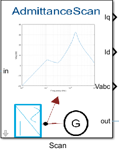

Admittance Scan Block
The Admittance Scan block is a custom component that injects voltage disturbances in the form of a pseudo random binary sequence (PRBS). You can set the magnitude of the PRBS signal that you inject into each axis by setting the PRBS Magnitude Along Vd (PU) and PRBS Magnitude Along Vq (PU) parameters.

Contents
Overview
The Admittance Scan block has a phase-locked loop (PLL) that tracks the steady-state grid frequency and phase which converts the measured voltages and currents into their respective d and q components. The block also uses the PLL phase angle to generate series voltage perturbations. The block converts the reference d and q axis perturbation voltages into their corresponding abc-phase voltages for series injection.
The Admittance Scan block performs the FFT on the voltage and current measurements and generates the frequency response data (FRD). Then, after obtaining the FRD, you can use the admittancescanPRBS(Vd,Vq,Vdc,f,data,modelorder,'Y') function to obtain the admittance spectrum of the system at the POI along the D axis and Q axis.

Usage
The admittancescanPRBS(Vd,Vq,Vdc,f,data,modelorder,'Y') function takes the magnitude of the injected voltage disturbance along the DQ axis, and DC-side as Vd, Vq, and Vdc. The disturbance frequency vector is f in Hz, the FRD, data, and the model order which you need to provide as the fourth input. You can use an optional argument Y/N to plot the frequency response.
See Also
- AdmittanceScanner --- Class for small-signal admittance estimation.
- configureAdmittanceScanner --- Configuration helper for admittance scan simulations.